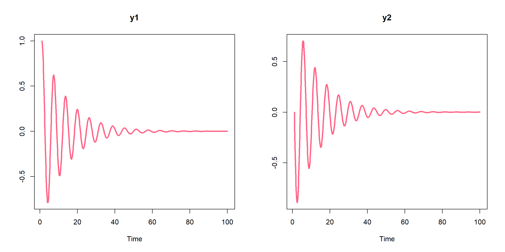

3 Modeling Functions
This section specifies the user-facing functions required to simulate the system of ordinary differential equations.
3.1 create_model
The create_model function is used to create the C code based on the text file representation of the model. This function returns and object of class azrmod. Once you create a model you can print a summary of the model in R. Below is an example of printing the simple harmonic oscillator, which is part of the AZRsim package.
library(AZRsim)sho <- create_model(system.file("examples/sho.txt", package="AZRsim"))
sho
#> AZRmodel
#> ========
#> Name: Harmonic Oscillator
#> Number States: 2
#> Number Parameters: 1
#> Number Variables: 0
#> Number Reactions: 0
#> Number Functions: 0In this model, the system of differential equations involves two states (\(y_1\) and \(y_2\)) and one parameter (\(\theta\)).
The azrmod object is a list and we can extract the meta data that was declared in the Model Name and Model Notes block by using $ to access the elements within the list. Continuing the above example, below is the code that allows the user print the meta data associated with the sho.txt example model to the R console.
sho$name
#> [1] "Harmonic Oscillator"
sho$notes
#> [1] "Harmonic Oscillator ODE example."3.2 simulate
Once you have created an azrmod object with create_model you can use the simulate generic to simulate the state variables over a specified number of time steps. Note that the simulate function requires an object of class azrmod, and will return an object of class azrsim and data.frame.
In the simple harmonic oscillator example above we have two states, so calling simulate(sho, seq(1, 100, by=0.1)) will provide a simulation of these two states over the time sequence 1 to 100 at 0.1 intervals.
sho_sim <- simulate(sho, seq(1, 100, by=0.1))
#> Warning: package 'bindrcpp' was built under R version 3.3.3
head(sho_sim)
#> TIME y1 y2
#> 1 1.0 1.000 0.0000
#> 2 1.1 0.995 -0.0991
#> 3 1.2 0.980 -0.1957
#> 4 1.3 0.956 -0.2890
#> 5 1.4 0.923 -0.3780
#> 6 1.5 0.881 -0.4619
dim(sho_sim)
#> [1] 991 33.3 plot
The plot generic can be called on an azrsim object and, by default, will construct a lattice plot of the first 9 parameters over time.
plot(sho_sim, col = "#FF6688", lwd = 3)
3.4 shiny_plot
The shiny_plot function must be called on an azrsim object and will launch a shiny app that will allow the user to interactively include/exclude any state variable estimated.